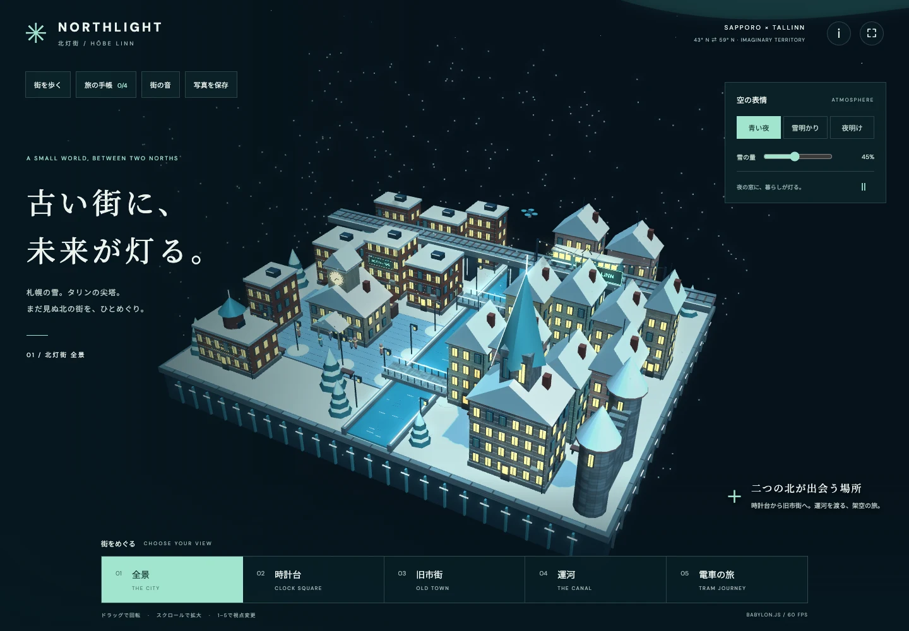

01課題
QUESTION書く時と、読み返す時では、文章への向き合い方が違う。長い原稿では、読んでいる位置も見失いやすい。
02設計判断
DECISION原稿を保ったまま、書く面から読む面へ。段落の読み尺で現在地を示し、文章の流れを追えるようにしました。
03確認したこと
IN PRACTICEPCとスマートフォンで段落移動と、編集へ戻った時の本文一致を確認。サインイン前の試用文は保存されません。
~ $ whoami
RYU SAKAMOTO / TPM × FDE
Ryu Sakamoto。事業と人、ソフトウェアの間に立ち、アイデアを実際に使えるプロダクトへつなぎます。
設計判断
原稿を保ったまま、書く面から読む面へ。段落の読み尺で現在地を示し、文章の流れを追えるようにしました。
 実画面 ↗
実画面 ↗書く・読むを別の原稿に分けず、同じ本文を往復する設計。
BUILD → trace/02 ↘$ ls ./work/ # プロダクト
書くための場所、場面から学ぶ語学、歩いて楽しむ小さな街。OmusBridgeで取り組むプロダクトです。
$ trace --from=question --to=product
課題・判断・検証を選ぶと、設計の意図が見えてきます。
書く時と、読み返す時では、文章への向き合い方が違う。長い原稿では、読んでいる位置も見失いやすい。
原稿を保ったまま、書く面から読む面へ。段落の読み尺で現在地を示し、文章の流れを追えるようにしました。
PCとスマートフォンで段落移動と、編集へ戻った時の本文一致を確認。サインイン前の試用文は保存されません。
同じ場面を、違う言語ではどう表すのか。
同じ絵の中で言葉を読み、発話と比較欄を隠して思い出す。場面と日本語を手掛かりに、答えを確かめる見開きへ。
PCとスマートフォンで、隠す・思い出す・確かめる操作を確認。言語を切り替えると、同じ場面で発話を再び読めます。
次の考えを、書きとめる。
考えを文章にするためのWeb上の作業場所。文書を探す検索と、書くための編集画面を一つの場所にまとめます。
書くことに集中でき、残した文書にも戻りやすい。その両立が設計のテーマです。公開インターフェースは、アカウントへの入口、検索、文書の作業場所を中心に構成しています。
OmusBridgeでは事業計画、MVP検討、Web開発を担当。ここで紹介する画面は、Codexとともに改善を進めています。
プロダクトを開く ↗言葉を、場面から覚える。
教材を選び、フレーズに取り組み、進み具合を確かめる。日常の場面を手がかりに、言葉を学ぶプロダクトです。
単語の一覧だけではなく、イラストで描く場面を学習の手がかりにしています。教材、回答、進捗を一つの流れにして、繰り返し取り組める構成です。
OmusBridgeでは事業計画、MVP検討、Web開発を担当。ここで紹介する画面は、Codexとともに改善を進めています。
プロダクトを開く ↗雪とネオンの間に、小さな街を。
札幌とタリンの歴史建築を、雪とネオンでつなぐ3Dの箱庭。街を歩き、灯りと暮らしをめぐる。

Babylon.js · 開発中の画面
北灯街（Northlight）は、二つの北の街を一つの架空の街区へつなぐ、Babylon.js製の3D体験です。歴史建築のかたちや街の灯りを、自分のペースで歩いて楽しめます。
OmusBridgeでは事業計画、MVP検討、Web開発を担当。ここで紹介する画面は、Codexとともに改善を進めています。
プロダクトを開く ↗$ cat experience # 経歴と専門領域
要件整理、計画、合意形成。事業の目的を、実現可能なプロダクトへ落とし込みます。
Vue・Nuxt・TypeScriptを中心に、Webの設計から実装まで取り組みます。
チーム運営、デリバリ、業務改善。AIを活用した開発と運用にも取り組んでいます。
プロジェクトマネジメント、エンジニアリング、事業運営。詳しい経歴をまとめています。
テキスト版の経歴 ↗「技術もビジネスもできるTPM(Technical Project Manager)」 として、Web開発、プロジェクトマネジメント、事業推進、組織運営を横断し、多種多様なプロジェクトのデリバリに向けて、マネジメントから現場での開発まで幅広い役割で推進してきました。
大学ではメディアや地方創生について研究し、幅広く世界に通用するITを生業とすべく、基本情報技術者の資格を取得。TIS株式会社ではSAP ERPコンサルタントとして、要件定義から設計、開発、テスト、運用まで経験し、商売のいろはを学びました。
その後、自分自身の手でプロダクトを創出する側に回るべく、株式会社ステップITソリューションおよび個人事業でWeb開発に従事。個人事業では、同人イベントの進行管理、ライター業、ICT講師など、エンジニアリング以外の領域にも参画しました。
株式会社HIKKYには、Webフロントエンド領域における最初の専任エンジニアとして入社。全社で扱うフロントエンドアーキテクチャの構築、コーディングガイドライン策定、チーム立ち上げ、マネジメントを担当しました。2024年からはWeb関連技術開発部の部長として開発組織を運営し、2025年10月には個人で推進していた札幌でのイベント事業の成果が認められ、プロジェクトマネジメント部の部長に就任しました。札幌を拠点としたキャリア構築ならびにライフステージの変更に伴い、2026年9月に同社を退職しました。
現在は、AIのCodexをパートナーに、TPM x FDE(Forward Deployed Engineer) としてのキャリアを形成中です。
プロジェクトマネジメント, 企画, 経理, 事業部〜全社レベルでのマネジメント
プロジェクトマネジメント部の部長として、企画営業、要件整理、進行管理、納品、事業計画、組織運営を横断して担当。Web開発で培った技術理解を活かし、企画・営業・開発・制作の間に立って、プロジェクトを実行可能な計画へ落とし込み、推進しました。
複数プロジェクトで、デリバリだけでなく、アップセルやクロスセルのスケールを実現。また、現場レベルの業務にとどまらず、ボードメンバーに対するコストや売上の管理・改善案の提案から実行、組織改善案の検討など、全社事業レベルの業務にも参画しました。
ChatGPT, Codex, Claude, Jira, GitHub, Figma
要件定義, 設計, 開発, 事業部マネジメント
Web開発部門の責任者として、開発組織の運営、技術方針の検討、R&D、メンバー支援、コードレビュー、開発プロセス改善を担当。経営・事業側の要求と現場の実装可能性をつなぎ、Nuxt / TypeScriptを中心としたWeb開発体制を継続的に改善しました。
Nuxt.js, TypeScript, Zod, GitHub Actions, Jira, Figma
要件定義, 設計, 開発, チームマネジメント
Webフロントエンド領域における最初の専任エンジニアとして参画。to C / to Bの複数案件におけるWebアプリケーションやVRアプリのフロントエンド / BFF部分の開発を担当しました。
各種案件を推進するとともに、全社的に扱うフロントエンドアーキテクチャを構築。コーディングガイドライン策定など、チームの立ち上げからマネジメントまでワンストップで実現しました。
Nuxt.js, TypeScript, Zod, GitHub Actions, Jira, Figma
国内外を拠点に、エンジニア業を中心として、Web開発、プロジェクトマネジメント、イベント運営、講師、執筆など、複数領域の案件に従事しています。
札幌で開催するバーチャル分野の展示・即売会において、プロジェクトマネージャーとして企画、営業、折衝、法務、経理、Web開発、プロジェクト管理、イベント運営を担当。700人以上が一堂に集うイベントのPMとして、各種職務に従事しました。
主な成果: 700人以上が来場するイベントの企画・運営を、個人事業主案件としてプロジェクトマネージャーの立場で推進しました。
使用技術・ツール: Nuxt.js, TypeScript, Cloudflare, Codex
B向けWebアプリケーション開発において、フロントエンド開発を担当しました。
使用技術・ツール: Nuxt.js, TypeScript, Firebase
C向けWebアプリケーション開発において、Repository-Factoryの導入やアーキテクチャ改善提案など、アーキテクト領域から幅広い開発支援を実施しました。
使用技術・ツール: HTML, CSS, Nuxt.js, Laravel, Adobe XD, Trello, Chart.js
C向けWeb CMS開発において、フロントエンド開発、WYSIWYGエディタ選定、デザイン提案を担当しました。
使用技術・ツール: Nuxt.js, Element UI, HTML, CSS, Adobe XD
複数案件でのWebフロントエンド開発とチーム管理を担当しました。
使用技術・ツール: Nunjucks, HTML, CSS, Adobe XD
C向けプロダクトならびにB向けパッケージの開発とチームマネジメントを実施。PM・営業・デザイナーとの折衝、Vue.js勉強会講師も担当しました。
使用技術・ツール: Vue.js, Git, Docker, Webpack, Backlog
AI画像学習サービスのフロントエンドおよびAPI部分を開発。プロジェクトリーダー、フロントエンドエンジニア、バックエンドエンジニアとして、REST API開発、フロントエンド開発、チームマネジメントを担当しました。
使用技術・ツール: Angular, Nest.js, Node.js, Docker, MySQL, PostgreSQL, MongoDB, Python
個人事業主のフォトグラファー向けWebサイトを開発。要件定義、デザイン、概要設計、フロントエンド、CMS開発を担当しました。
使用技術・ツール: PHP, HTML, CSS, jQuery
概要設計, 詳細設計, 開発, QA
通信系企業における、業務管理者向けWebアプリならびにHPOOを用いたRPAの開発を担当。自分自身でプロダクトを創出できる実力を身につけるため、コンサルタントからエンジニア職へ転向し、エラーが出ても影響が最小限に済むフェイルセーフな機能をデリバリしました。
HPOO, ExtJS, shell, VBA
要件定義, 設計, 開発, テスト, 運用
新卒入社で、SAP ERPのコンサルタントとして従事。独立系ベンダー企業のプライムベンダーとして案件に参画し、SAP ERPのカスタマイズや帳票作成、業務システムの要件定義から運用までワンストップで担当しました。
上流工程から下流工程まで、パートナー企業のベンダーと共に携わり、ウォーターフォールでの要件定義から開発まで、そのいろはを身につけました。
SAP ERP(FI, SD, MM), ABAP
職務経歴とは分けて、発信・教育・コミュニティ活動として以下の経験があります。
$ open connect # 連絡先
仕事の経歴、コード、日々の活動、運営する会社。各プロフィールはこちらから。
コマンドでも、リンクのクリックでも探索できます。